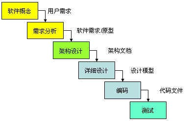
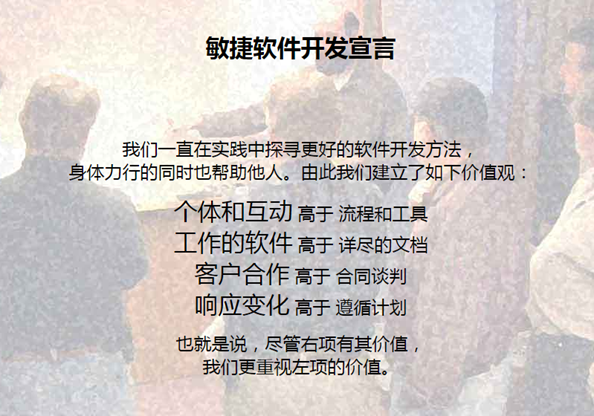

什么是敏捷开发
分享人：李晗
目录
1.几种开发方法
1.1瀑布式开发 1.2迭代式开发 1.3螺旋式开发
2.敏捷开发
2.1 敏捷开发的诞生 2.2敏捷开发宣言 2.3 敏捷开发
3.敏捷开发方法
3.1 Scrum 3.1.1 什么是scrum 3.1.2 Scrum 框架结构 3.2其他开发方法介绍
4.敏捷管理工具
4.1 禅道
5.实例：修真院敏捷开发流程
6.讨论
7.参考文献
1.几种开发方法
1.1瀑布式开发——瀑布模型（Waterfall Model）
1970年温斯顿·罗伊斯（Winston Royce）提出了著名的“瀑布模型”，直到80年代早期，它一直是唯一被广泛采用的软件开发模型。
瀑布模型要求软件开发严格按按照需求→分析→设计→编码→测试的阶段进行，每一个阶段都可以定义明确的产出物和验证准则。瀑布模型在每一个阶段完成后都可以组织相关的评审和验证，严格的瀑布模型每一个阶段都不应该重叠,而应该是在评审通过后才能够进入到下一个阶段。遵循自上而下、相互衔接的固定次序，如同瀑布流水，逐级下落。
瀑布模型式是最典型的预见性的方法。
瀑布模型的优点仍然是可以保证整个软件产品较高的质量,保证缺陷能够提前的被发现和解决.采用瀑布模型可以保证系统在整体上的充分把握,使系统具备良好的扩展性和可维护性
瀑布式的主要的问题是它的严格分级导致的自由度降低，项目早期即作出承诺导致对后期需求的变化难以调整，代价高昂。
1.2 迭代式开发
迭代式开发也被称作迭代增量式开发或迭代进化式开发，是一种与传统的瀑布式开发相反的软件开发过程，它弥补了传统开发方式中的一些弱点，具有更高的成功率和生产率。
在迭代式开发方法中，整个开发工作被组织为一系列的短小的、固定长度（如3周）的小项目，被称为一系列的迭代。每一次迭代都包括了需求分析、设计、实现与测试。采用这种方法，在需求被完整地确定之前就能启动开发工作，并在一次迭代中完成系统的一部分功能或业务逻辑的开发工作。再通过客户的反馈来细化需求，并开始新一轮的迭代。
1.3螺旋开发——螺旋模型（Spiral Model）
螺旋模型是一种演化软件开发过程模型，它兼顾了快速原型的迭代的特征以及瀑布模型的系统化与严格监控。螺旋模型最大的特点在于强调其他模型所忽视的风险分析，螺旋模型很大程度上是一种风险驱动的方法体系，因为在每个阶段之前及经常发生的循环之前，都必须首先进行风险评估。
通常螺旋模型由四个阶段组成：制定计划、风险分析、实施工程和客户评估。
（1）制定计划：确定软件目标，选定实施方案，弄清项目开发的限制条件；
（2）风险分析：分析评估所选方案，考虑如何识别和消除风险；
（3）实施工程：实施软件开发和验证；
（4）客户评估：评价开发工作，提出修正建议，制定下一步计划。
2.敏捷开发
2.1 敏捷开发的诞生
程序员说，要有敏捷

美国在计算机行业已经走了几十年，瀑布流、螺旋模型、快速迭代...各种各样的软件开发流程雨后春笋各领风骚一段时间。虽然不断变化和完善，但互联网的加速发展让传统方法显得笨重，难以快速适应变化。有十七个程序员（程序员改变世界）在美国犹他州的一个风景区开了个碰头会，找到了一个团队耦合度高，流程极其灵活的方法，他们把它称为Agile program development。

2.2 敏捷开发宣言

2.3 敏捷开发
敏捷开发以用户的需求进化为核心，采用迭代、循序渐进的方法进行软件开发
敏捷开发是一种应对快速变化的需求的一种软件开发能力。它们的具体名称、理念、过程、术语都不尽相同，相对于“非敏捷”，更强调程序员团队与业务专家之间的紧密协作、面对面的沟通（认为比书面的文档更有效）、频繁交付新的软件版本、紧凑而自我组织型的团队、能够很好地适应需求变化的代码编写和团队组织方法，也更注重软件开发过程中人的作用。
3.敏捷开发方法

3.1 Scrum
3.1.1 什么是scrum
Scrum 是当前最流行的敏捷软件开发方法论和实施框架。
Scrum 是一种团队管理工作的方式，其将工作分解为较小的工作单元，并在周期性固定的时间段内持续地交付工作单元
> 上面描述的周期性固定的时间段，称为迭代（Iteration）或者冲刺（Sprint）。
上面描述的较小的工作单元，称为用户故事（User Story）。
>用户故事可以使用特定的格式来描述，其描述了一个对于客户有价值的工作，而且可以在一个迭代周期内完成。
3.1.2 Scrum 框架结构
Scrum敏捷开发流程主要包括：三个角色、三个物件和四个会议。
三个角色：
产品经理（Product Owner）：主要负责确定产品的功能和达到要求的标准，指定软件的发布日期和交付的内容，同时有权力接受或拒绝开发团队的工作成果。敏捷教练（Scrum Master）：主要负责整个Scrum流程在项目中的顺利实施和进行，以及清除挡在客户和开发工作之间的沟通障碍，使得客户可以直接驱动开发。
开发团队（Scrum Team）：主要负责软件产品在Scrum规定流程下进行开发工作，人数控制在5~10人左右。
三个物件
1、product Backlog 产品Backlog指根据初始需求分解出的任务列表，包括功能性和非功能性的所有功能。2、Sprint Backlog ：这是一个迭代计划会议的输出，包含开发团队在迭代周期内所要完成的工作列表。 如果说产品backlog是以story为单位，文档归属为PM团队，那么Sprint Backlog 是以小时（时间）为单位的，文档归属为开发团队。
3、燃尽图。
scrum基本流程（四个会议）：

1. 产品负责人负责整理user story，形成左侧的product backlog。
2.产品发布计划会议：product owner负责讲解user story，对其进行估算和排序，发布计划会议的产出就是制定出这一期迭代要完成的story列表，sprint backlog。
3. spring计划会议：在每个迭代之初，开发团队和 Product Owner 共同来计划在迭代周期内要完成的工作。Product Owner 负责向团队讲解要完成的工作的内容，开发团队负责对工作进行估计。
4.spring每日立会：每天，开发团队和产品负责人都要进行一个短暂的沟通。团队成员回答：昨天做了什么？今天计划做什么？遇到了什么问题？
5.spring演示会议：在迭代周期结束时，开发团队向产品负责人及所有干系人进行演示，并接受反馈。
6.spring回顾会议：在迭代周期结束时，Scrum 团队通过会议来对迭代的过程进行总结，以促使团队自我持续改进。
3.2其他开发方法介绍
水晶方法，Crystal ，是由 Alistair Cockburn 和 Jim Highsmith 建立的敏捷方法系列，其目的是发展一种提倡“机动性的”方法，包含具有共性的核心元素，每个都含有独特的角色、过程模式、工作产品和实践。Crystal 家族实际上是一组经过证明、对不同类型项目非常有效的敏捷过程，它的发明使得敏捷团队可以根据其项目和环境选择最合适的 Crystal 家族成员。
透明水晶方法，适合于一个小团队来进行敏捷开发，人数在6人以下为宜。
七大体系特征： 1.经常交付 2.反思改进 3.渗透式交流 4.个人安全 5.焦点 6.与专家用户建立方便的联系 7.配有自动测试、配置管理和经常集成功能的技术环境
敏捷方法的总结：
基于敏捷指导思想 ，形成了不少敏捷软件开发方法 (例如XP、scrum、水晶方法等 )，它们大都强调适应性而非预测性、强调以人为中心，而不以流程为中心 ，以及对变化的适应和对人性的关注。
纵观所有敏捷开发方法，其基本都具备轻载、基于时间、Just Enough、并行并基于构件的迭代和增量的特点
4.敏捷管理工具

4.1禅道
禅道是一款国产专业的研发项目管理软件，主要管理思想基于国际流行的敏捷项目管理方法—Scrum。
5.实例：修真院敏捷开发流程
回头再总结一遍：
敏捷开发是一种以人为核心、迭代、循序渐进的开发方法。
敏捷开发方法的核心思想概括起来，就是“以人为本”和“适应变化”。
6.讨论
7.参考文献
瀑布模型、迭代模型、螺旋模型、敏捷开发、scrum——维基百科
瀑布模型、迭代模型、螺旋模型、敏捷开发、scrum——百度百科。
五种典型开发周期模型（瀑布、V、原型化、螺旋、迭代） - CSDN博客
软件生命周期的内容以及生命周期模型比较 - CSDN博客
你大概走了假敏捷：认真说说敏捷的实现和问题。——腾讯云，薄玉桴
软件开发模式对比(瀑布、迭代、螺旋、敏捷) - aparche - 博客园
敏捷开发系列之旅 第四站（透明的Crystal水晶方法） - CSDN博客
敏 捷 开 发 中 原 则 与 过 程 的 分 析 与 研 究——张 孟 同济大学软件学院，上海 201804
【创业技术之道】 谈谈敏捷开发和Scrum——知乎，谭超